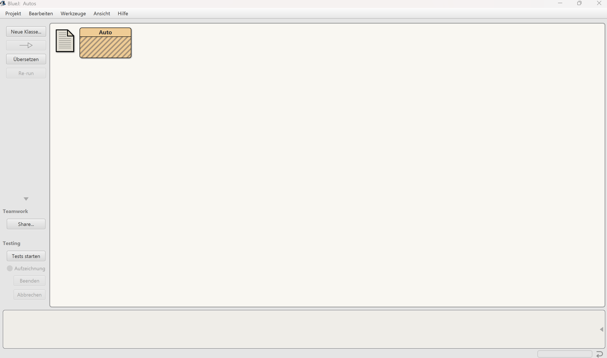

Heute schreibst du dein erstes Java-Programm: Autos, die hupen und fahren können. Du arbeitest mit der Entwicklungsumgebung BlueJ. Geh die Schritte der Reihe nach durch und hake jeden erledigten Schritt ab. Codeschnipsel kannst du mit dem Knopf Kopieren übernehmen.
Wichtig: Du musst heute noch nicht alles im Detail verstehen. Es geht erst einmal darum, die zentralen Schritte wie nach einem Kochrezept nachzumachen und ein erstes Gefühl für die Arbeit mit BlueJ zu bekommen. Die Einzelheiten schauen wir uns in den nächsten Stunden genauer an.
Beantworte die Fragen in den blauen Kästen in ganzen Sätzen. Wir besprechen sie am Ende der Stunde.
Melde dich mit deiner Schul-E-Mail-Adresse an. Deine Antworten und Haken werden automatisch gespeichert, und du kannst später weiterarbeiten.
Bearbeite die Schritte direkt. Deine Antworten gehen beim Schließen der Seite verloren.
Gib deine Schul-E-Mail-Adresse und dein Passwort ein.
Autos ein, wähle als Speicherort deinen eigenen Ordner und bestätige.Auto ein, mit großem A. Lass die Klassenart auf
stehen und klicke auf .Im großen Feld erscheint nun ein schraffierter Kasten mit der Aufschrift Auto. Das Blatt-Symbol links daneben ist eine Notizdatei, die BlueJ zu jedem Projekt anlegt. Du kannst sie ignorieren.

Öffne den Editor mit einem Doppelklick auf den Kasten Auto. Diesen Quelltext hat BlueJ automatisch als Grundgerüst geschrieben. Du musst noch nicht alles verstehen. Wichtig sind drei Stellen, die hier gelb markiert sind:
/**
* Beschreiben Sie hier die Klasse Auto.
*
* @author (Ihr Name)
* @version (eine Versionsnummer oder ein Datum)
*/
public class Auto
{
// Instanzvariablen - ersetzen Sie das folgende Beispiel mit Ihren Variablen
private int x;
/**
* Konstruktor für Objekte der Klasse Auto
*/
public Auto()
{
// Instanzvariable initialisieren
x = 0;
}
/**
* Ein Beispiel einer Methode - ersetzen Sie diesen Kommentar mit Ihrem eigenen
*
* @param y ein Beispielparameter für eine Methode
* @return die Summe aus x und y
*/
public int beispielMethode(int y)
{
// tragen Sie hier den Code ein
return x + y;
}
}public class Auto: Hier beginnt der Quelltext für Auto. Alles
zwischen der folgenden geschweiften Klammer { und der letzten } gehört dazu.private int x;: Etwas, das sich jedes Auto merkt, hier eine ganze Zahl namens x.public Auto(): Dieser Abschnitt heißt Konstruktor. Er wird
ausgeführt, wenn ein neues Auto hergestellt wird.Die grauen und blauen Zeilen sind Kommentare. Sie sind nur für Menschen gedacht; der Computer überliest sie.
Jetzt ersetzt du die Beispiele von BlueJ Stück für Stück durch eigenen Code. Markiere dazu im Editor jeweils den alten Teil, kopiere den neuen Teil von hier und füge ihn mit + ein.
Teil A: Was sich jedes Auto merkt. Ersetze die beiden Zeilen
// Instanzvariablen … und private int x; durch:
// Das merkt sich jedes Auto
private String name;
private int gefahreneStrecke;String) und einen Kilometerzähler (eine ganze Zahl, in Java int).Teil B: Was beim Herstellen passiert. Ersetze den ganzen Konstruktor, also alles
von public Auto() bis zur dazugehörigen schließenden Klammer }, durch:
public Auto(String pName)
{
this.name = pName;
this.gefahreneStrecke = 0;
}pName), und sein Kilometerzähler beginnt bei 0.
this.name bedeutet: der Name dieses Autos.Teil C: Was jedes Auto kann. Ersetze die beispielMethode mitsamt dem
Kommentar darüber durch:
/**
* Lässt das Auto hupen.
*/
public void hupe()
{
System.out.println(this.name + ": Honk, honk!");
}
/**
* Lässt das Auto 100 km fahren.
*/
public void fahre100km()
{
this.gefahreneStrecke = this.gefahreneStrecke + 100;
}
/**
* Gibt die insgesamt gefahrene Strecke aus.
*/
public void zeigeGefahreneStreckeAn()
{
System.out.println("Gefahrene Strecke von " + this.name + ": " + this.gefahreneStrecke + " km");
}System.out.println(…) schreibt einen Text in ein
Ausgabefenster./**
* Ein Auto, das hupen und fahren kann.
*
* @author (Ihr Name)
* @version (eine Versionsnummer oder ein Datum)
*/
public class Auto
{
// Das merkt sich jedes Auto
private String name;
private int gefahreneStrecke;
/**
* Konstruktor für Objekte der Klasse Auto
*/
public Auto(String pName)
{
this.name = pName;
this.gefahreneStrecke = 0;
}
/**
* Lässt das Auto hupen.
*/
public void hupe()
{
System.out.println(this.name + ": Honk, honk!");
}
/**
* Lässt das Auto 100 km fahren.
*/
public void fahre100km()
{
this.gefahreneStrecke = this.gefahreneStrecke + 100;
}
/**
* Gibt die insgesamt gefahrene Strecke aus.
*/
public void zeigeGefahreneStreckeAn()
{
System.out.println("Gefahrene Strecke von " + this.name + ": " + this.gefahreneStrecke + " km");
}
}Im BlueJ-Fenster ist die Schraffur des Kastens Auto jetzt verschwunden.
;, eine fehlende oder doppelte Klammer }.auto1. Lass ihn so.pName den Namen deines Autos in Anführungszeichen ein,
z. B. "Porsche", und klicke auf ."Golf" und "Ente".auto1 ist der Name, unter dem
BlueJ das Auto unten anzeigt. "Porsche" wird dem Konstruktor übergeben und im Auto als
sein name gespeichert. Texte stehen in Java immer in Anführungszeichen.auto1 und wähle
.auto2.| private String name | "Porsche" |
| private int gefahreneStrecke | 0 |
Ein Rechtsklick auf ein rotes Kästchen zeigt auch, was das Auto kann:
auto1 hupen (). Die Ausgabe erscheint im Terminal-Fenster.auto1 dreimal 100 km fahren und auto2 einmal.Ab jetzt sollen nur noch Gebrauchtwagen hergestellt werden, die schon 50 000 km gefahren sind.
this.gefahreneStrecke = 0; zu this.gefahreneStrecke = 50000;fahre10km(), die das Auto
10 km fahren lässt. Orientiere dich an fahre100km(). Teste sie an einem neuen Auto.Fahrrad an, die sich ebenfalls einen Namen und die gefahrene
Strecke merkt und klingeln kann ("Kling, kling!"). Stelle zwei Fahrräder her.